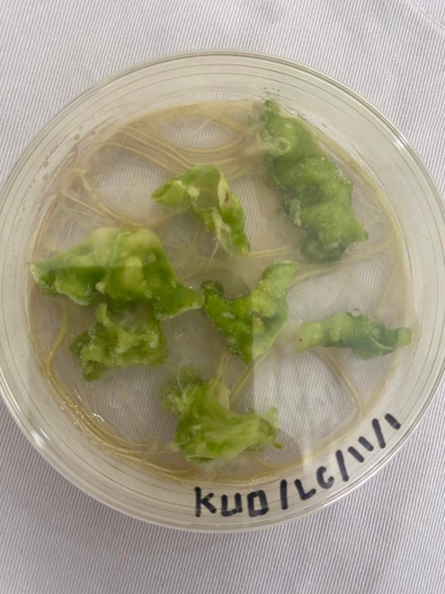

植物细胞工程（上）：基本技术
本期导读
植物细胞工程（上） · 组织培养 · 体细胞杂交

视频原话 · 导读3 句
- 同学们好！这节课梳理人教版选择性必修三第二章第一节的上半部分——植物细胞工程的基本技术。9.4s
- 高考常考植物组织培养的过程和条件、植物体细胞杂交的流程，以及杂种植株的染色体数目。8.7s
- 我们按八个考点梳理，每个考点都讲清楚怎么考、怎么做。5.5s
细胞的全能性01#
细胞工程：在细胞器、细胞或组织水平上操作，有目的地获得特定的细胞、组织、器官、个体或其产品
细胞的全能性：细胞经分裂和分化后，仍然具有产生完整生物体或分化成其他各种细胞的潜能和特性
原因：细胞含有该物种的全套遗传信息
体内不表现：基因的选择性表达；表现条件：离体 + 一定的营养、激素等条件
解题方法
看终点：发育成完整个体或分化成其他各种细胞，才体现全能性；只长出愈伤组织不算
视频原话5 句
- 考点一，细胞工程与细胞的全能性。细胞工程是在细胞器、细胞或组织水平上操作，有目的地获得特定的细胞、组织、器官、个体或其产品。14.6s
- 细胞的全能性：细胞经分裂和分化后，仍然具有产生完整生物体或分化成其他各种细胞的潜能和特性。9.9s
- 原因是：每个细胞都含有该物种的全套遗传信息。5.0s
- 但在生物体内，细胞并不表现全能性，因为基因的选择性表达。必须离体，并在一定条件下才能表现。9.7s
- 考法：判断是否体现全能性。解题方法：看终点——发育成完整个体，或分化成其他各种细胞，才算体现全能性。11.5s
植物组织培养02#
外植体
脱分化→
愈伤组织
再分化→
芽、根
→
完整植株
外植体：离体的植物器官、组织或细胞
脱分化：失去特有的结构和功能，转变成未分化的细胞
愈伤组织：不定形的薄壁组织团块
再分化：愈伤组织重新分化成芽、根等器官
易错
脱分化 → 愈伤组织；再分化 → 芽、根。两个过程不要弄反
视频原话5 句
- 考点二，植物组织培养。把离体的植物器官、组织或细胞，叫作外植体。7.4s
- 外植体经过脱分化，失去特有的结构和功能，转变成未分化的细胞，形成愈伤组织。7.9s
- 愈伤组织是一种不定形的薄壁组织团块。4.0s
- 愈伤组织经过再分化，重新分化出芽、根等器官，最终发育成完整植株。7.3s
- 易错：脱分化形成的是愈伤组织，再分化形成的是芽、根；不要把两个过程弄反。7.9s
组织培养的条件03#
无菌
外植体消毒；培养基、器械灭菌
营养
MS 培养基：无机营养 + 蔗糖等有机营养
光照
诱导愈伤组织一般不需要光照；再分化后给予光照
| 生长素 / 细胞分裂素（用量比值） | 结果 |
|---|---|
| 比值高 | 有利于根的分化 |
| 比值低 | 有利于芽的分化 |
| 比值适中 | 促进愈伤组织的形成 |
解题方法
口诀：生长素多生根，细胞分裂素多生芽，两者相当长愈伤
视频原话6 句
- 考点三，植物组织培养的条件。首先要无菌：外植体消毒，培养基和器械灭菌。8.4s
- 其次要有营养：常用MS培养基，含有无机营养和蔗糖等有机营养。6.8s
- 关键是生长素和细胞分裂素的浓度和比例。4.6s
- 生长素用量比细胞分裂素用量的比值高，有利于根的分化；比值低，有利于芽的分化；比值适中，促进愈伤组织的形成。11.1s
- 光照：诱导愈伤组织期间一般不需要光照，再分化以后要给予适当光照。7.3s
- 解题方法：记口诀——生长素多生根，细胞分裂素多生芽。6.0s
菊花的组织培养04#
① 外植体消毒
流水冲洗
→
酒精消毒
→
无菌水清洗
→
次氯酸钠溶液
→
无菌水清洗
以免消毒剂伤害外植体
② 接种、培养和移栽
接种
诱导愈伤组织 · 不倒插
→
转接
诱导生芽
→
转接
诱导生根
→
移栽
先蛭石或珍珠岩，再土壤
易错
外植体只能消毒，不能灭菌（会杀死外植体细胞）；培养基和器械才灭菌
视频原话6 句
- 考点四，实验：菊花的组织培养。第一步，外植体消毒：流水冲洗后，用酒精消毒，无菌水清洗。10.3s
- 再用次氯酸钠溶液处理，最后用无菌水清洗，以免消毒剂伤害外植体。7.0s
- 第二步，把茎段切成小段，接种到诱导愈伤组织的培养基上，注意不要倒插。7.2s
- 第三步，长出愈伤组织后，转接到诱导生芽的培养基上，长出芽后再转接到诱导生根的培养基上。9.2s
- 第四步，移栽：先移到消过毒的蛭石或珍珠岩中，等幼苗长壮后再移栽到土壤中。8.3s
- 易错：外植体只能消毒，不能灭菌，灭菌会杀死外植体细胞；培养基和器械才要灭菌。9.0s
去壁获得原生质体05#
植物体细胞杂交：将不同来源的植物体细胞融合成杂种细胞，再把杂种细胞培育成新植物体
考法
酶解去壁要在等渗或略高渗溶液中进行，防止原生质体吸水涨破
视频原话4 句
- 考点五，植物体细胞杂交。它是把不同来源的植物体细胞融合成杂种细胞，再把杂种细胞培育成新植物体。10.4s
- 第一步是去除细胞壁。植物细胞壁的主要成分是纤维素和果胶，所以用纤维素酶和果胶酶处理。9.3s
- 去掉细胞壁后得到的结构，叫作原生质体。4.2s
- 考法：酶解去壁要在等渗或略高渗的溶液中进行。解题方法：原因是防止原生质体吸水涨破。9.9s
原生质体融合06#
诱导融合：物理法（电融合法、离心法）；化学法（聚乙二醇（PEG）融合法、高 Ca2+—高 pH 融合法）
易错
融合结果还有同种细胞融合的，需要筛选；灭活病毒只用于诱导动物细胞融合
视频原话4 句
- 考点六，原生质体融合。物理法有电融合法、离心法；化学法有聚乙二醇融合法、高钙—高pH融合法。10.5s
- 融合后得到杂种细胞，杂种细胞再生出细胞壁，标志着融合成功。6.8s
- 然后，杂种细胞经过脱分化形成愈伤组织，再经过再分化，发育成杂种植株。8.0s
- 易错：融合的结果不止杂种细胞，还有同种细胞融合的，需要筛选；动物细胞融合可以用灭活病毒，植物不用。10.5s
杂种植株染色体07#
设植物甲体细胞有 2m 条染色体（二倍体），植物乙有 2n 条（二倍体）
| 比较项目 | 体细胞杂交 | 有性杂交 |
|---|---|---|
| 染色体数 | 2m + 2n | m + n |
| 倍性 | 异源四倍体 | 异源二倍体 |
| 同源染色体 | 有，减数分裂能正常联会 | 无，联会紊乱 |
| 可育性 | 一般可育 | 一般不育 |
解题方法
体细胞杂交：两个体细胞的染色体数直接相加，倍性也相加；有性杂交：两个配子相加
视频原话5 句
- 考点七，杂种植株的染色体。设甲的体细胞有2m条染色体，乙有2n条。7.8s
- 体细胞杂交得到的杂种植株，染色体是两者之和，为2m + 2n，属于异源四倍体。8.3s
- 杂种植株含有两个物种各自的同源染色体，减数分裂时能正常联会，所以一般可育。8.3s
- 如果甲乙有性杂交，后代染色体是m + n，没有同源染色体，一般不育。6.9s
- 解题方法：体细胞杂交，染色体数直接相加，几倍体也相加；有性杂交，是两个配子相加。9.0s
体细胞杂交的意义08#
意义
打破生殖隔离
实现远缘杂交育种
培育植物新品种
实现远缘杂交育种
培育植物新品种
实例
番茄—马铃薯
杂种植株
杂种植株
局限
没有“地上结番茄、地下长马铃薯”
两套遗传物质的表达相互影响
两套遗传物质的表达相互影响
解题方法
问意义，标准答法：打破生殖隔离，实现远缘杂交育种
视频原话4 句
- 考点八，植物体细胞杂交的意义。它在打破生殖隔离、实现远缘杂交育种、培育植物新品种方面有独特的优势。10.9s
- 例如番茄—马铃薯杂种植株，就是用这种方法获得的。5.3s
- 但它没有像人们设想的那样，地上结番茄、地下长马铃薯，因为两套遗传物质的表达相互影响。8.9s
- 考法：问意义。解题方法：答“打破生殖隔离，实现远缘杂交育种”，这是标准表述。8.7s
易错速查✓
先自己判断，再点按钮查看对错与解析。
- 1植物细胞在体内就能表现出全能性说法错误：离体并在一定条件下才能表现
- 2愈伤组织是脱分化形成的说法正确。
- 3生长素比例高时有利于生芽说法错误：生长素比例高有利于生根
- 4去除细胞壁用纤维素酶和果胶酶说法正确。
- 5原生质体融合完成的标志是核融合说法错误：标志是杂种细胞再生出细胞壁
- 6体细胞杂交能打破生殖隔离说法正确。
组培靠全能性，杂交先去壁！
视频原话 · 易错速查5 句
- 最后，用六道判断题检验一下。3.6s
- 判断一：植物细胞在体内就能表现全能性？错，要离体。判断二：愈伤组织是脱分化形成的？对。11.2s
- 判断三：生长素比例高有利于生芽？错，有利于生根。判断四：去壁用纤维素酶和果胶酶？对。11.2s
- 判断五：原生质体融合完成的标志是核融合？错，是再生出细胞壁。判断六：体细胞杂交能打破生殖隔离？对。12.5s
- 八个考点串成一条线：组培靠全能性，杂交先去壁。我们下期再见！7.1s
图片来源
图片来源：Wikimedia Commons —— Slience Suzuka《Tobacco callus induce》CC BY-SA 4.0
Photo: Slience Suzuka, CC BY-SA 4.0